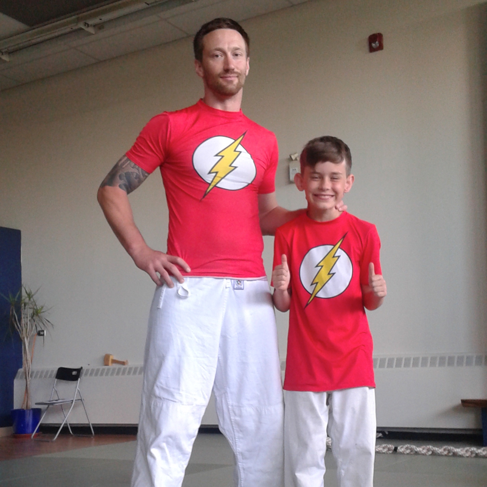

<!DOCTYPE html><html lang="en"><head><meta charset="utf-8"><meta name="viewport" content="width=device-width, initial-scale=1, shrink-to-fit=no"><meta http-equiv="x-ua-compatible" content="ie=edge"><link rel="stylesheet" type="text/css" href="https://fonts.googleapis.com/css?family=Lato:300,400|Open+Sans:300,400,700,800|Roboto:400,900"><link rel="stylesheet" type="text/css" href="https://maxcdn.bootstrapcdn.com/font-awesome/4.6.3/css/font-awesome.min.css"><link rel="stylesheet" type="text/css" href="https://cdnjs.cloudflare.com/ajax/libs/animate.css/3.5.2/animate.min.css"><link rel="stylesheet" href="//blueimp.github.io/Gallery/css/blueimp-gallery.min.css"><link rel="stylesheet" href="css/bootstrap-image-gallery.min.css"><link rel="stylesheet" type="text/css" href="css/style.css"><title>The Streak Of Tigers</title></head></html><body><div class="container-fluid"><div class="row"><div class="jumbo-about hidden-md-down"><div class="container"><div class="row"><div class="col-md-2 light-nav"><div class="row"><div class="col-xs-12"><em>STREAK</em><br><em>OF</em><br><em>TIGERS</em></div></div><div class="row"><div class="text-md-center"><p>NAKA IMA</p><p>AIKIDO</p></div></div></div><div class="col-md-2 hidden-sm-down dark-nav"><ul class="nav"><li class="nav-item"><a href="index.html" class="nav-link text-uppercase">home</a></li><li class="nav-item"><a href="about.html" class="nav-link active text-uppercase">about</a></li><li class="nav-item"><a href="schedule.html" class="nav-link text-uppercase">schedule</a></li><li class="nav-item"><a href="photos.html" class="nav-link text-uppercase">photos</a></li><li class="nav-item"><a href="contact.html" class="nav-link text-uppercase">contact</a></li></ul></div></div></div></div></div><nav id="element" class="navbar navbar-light navbar-fixed-top bg-faded hidden-lg-up animated"><div class="container"><button id="nav-button" type="button" class="navbar-toggler hidden-lg-up"><i aria-hidden="true" class="fa fa-bars fa-lg"></i></button><div id="exCollapsingNavbar2" class="navbar-toggleable hidden-md-down animated"><a href="index.html" class="navbar-brand"><span>Streak Of Tigers</span></a><ul class="nav navbar-nav pull-xs-left pull-lg-right"><li class="nav-item"><a href="index.html" class="nav-link text-uppercase">home</a></li><li class="nav-item active"><a href="about.html" class="nav-link text-uppercase">about</a></li><li class="nav-item"><a href="schedule.html" class="nav-link text-uppercase">schedule</a></li><li class="nav-item"><a href="photos.html" class="nav-link text-uppercase">photos</a></li><li class="nav-item"><a href="contact.html" class="nav-link text-uppercase">contact</a></li></ul></div></div></nav></div><div class="container"><div class="about-padding"><div class="row"><div class="col-md-3"><h2 class="sectionTitle">JESSE BROWN</h2></div></div><div class="row"><div style="margin-top: 50px" class="col-md-6"><p>Jesse Brown, Black Belt in Aikido is the Leader of the Streak of Tigers. He is a life-long student of the martial arts. In addition to a 4th degree black belt in Aikido, Jesse is a 1st Dan in Iaido, is currently a brown belt in judo and has studied a wide range of martial arts including: 5 years of Norther Shaolin Kungfu in Japan (the equivalent of 1st Dan) and reached teaching level in Baji Quan (equivalent of 3rd Dan). He has competed in boxing at the provincial level and remains active in competitive Judo. He has won a gold medal at an international competition in May of 2016. Prior to joining the teaching staff at Naka Ima, Jesse spent five years teaching and training in Japan; he is also fluent in spoken and written Japanese. His passion for martial arts has led him all over the world to train with many different instructors in a range of varying disciplines. He is also currently completing a bachelor’s degree in kinesiology at York University and works as a strength and conditioning coach.</p></div><div class="col-md-5 push-md-1"></div></div></div></div><footer><div class="container"><div class="row"><div class="col-lg-1 hidden-md-down"><i class="fa fa-map-marker fa-5x"></i></div><div class="col-lg-3"><p class="text-uppercase lead">naka ima aikikai aikido</p><p>473 Oakwood Ave</p><p>Toronto, ON M6E 2W4</p></div><div class="col-lg-1 hidden-md-down"><i class="fa fa-mobile fa-5x"></i></div><div class="col-lg-3"><p>@StreakOfTIgers</p><p class="text-uppercase">phone: 416.259.4320</p><p class="text-uppercase">email: info@nakaima.ca</p></div><div class="col-sm-1 push-sm-4"></div><div class="col-sm-1 pull-sm-1"><a href="https://www.youtube.com/user/TheAikiFIt"><i class="fa fa-youtube-square fa-4x"></i></a></div><div class="col-sm-1 pull-sm-1"><a href="http://www.facebook.com/NIAstreakoftigers"><i class="fa fa-facebook-square fa-4x"></i></a></div><div class="col-sm-1 pull-sm-1"><a href="https://www.instagram.com/streakoftigers/"><i class="fa fa-instagram fa-4x"></i></a></div></div></div></footer><script src="https://code.jquery.com/jquery-3.2.1.slim.min.js" integrity="sha384-KJ3o2DKtIkvYIK3UENzmM7KCkRr/rE9/Qpg6aAZGJwFDMVNA/GpGFF93hXpG5KkN" crossorigin="anonymous"></script><script src="https://cdnjs.cloudflare.com/ajax/libs/popper.js/1.12.9/umd/popper.min.js" integrity="sha384-ApNbgh9B+Y1QKtv3Rn7W3mgPxhU9K/ScQsAP7hUibX39j7fakFPskvXusvfa0b4Q" crossorigin="anonymous"></script><script src="https://maxcdn.bootstrapcdn.com/bootstrap/4.0.0/js/bootstrap.min.js" integrity="sha384-JZR6Spejh4U02d8jOt6vLEHfe/JQGiRRSQQxSfFWpi1MquVdAyjUar5+76PVCmYl" crossorigin="anonymous"></script><script src="https://cdnjs.cloudflare.com/ajax/libs/tether/1.2.0/js/tether.min.js" integrity="sha384-Plbmg8JY28KFelvJVai01l8WyZzrYWG825m+cZ0eDDS1f7d/js6ikvy1+X+guPIB" crossorigin="anonymous"></script><script src="js/navbar.js"></script></body>